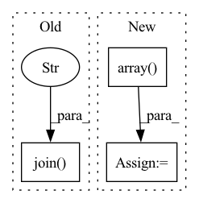

Pattern ID :17581

Before Change
// _ = plt.hist(out_img[:, :, 0], bins="auto") // arguments are passed to np.histogram
// plt.title("Histogram with "auto" bins")
// plt.show()
np.save(os.path.join(dump_path, "out.npy"), out_img)
out_img = Image.fromarray(np.uint8(get_uint8_range(out_img)))
out_img.save(os.path.join(dump_path, str(img_id).zfill(img_format[0]) + img_format[1]))
After Change
img_format = config["img_format"]
out_img_name = str(img_id).zfill(img_format[0]) + img_format[1] if saving_freq != -1 else generate_out_img_name(config)
dump_img = np.copy(out_img)
dump_img += np.array(IMAGENET_MEAN_255).reshape((1, 1, 3))
dump_img = np.clip(dump_img, 0, 255).astype("uint8")
cv.imwrite(os.path.join(dump_path, out_img_name), dump_img[:, :, ::-1])
if should_display:
In pattern: SUPERPATTERN
Frequency: 3
Non-data size: 3
Instances
Fragment ID: 58038535
Project Name: gordicaleksa/pytorch-neural-style-transfer
Commit Name: 6856e5796971c3fb5e77c0a798b35e6e106b5bcb
Time: 2020-03-30
Author: gordicaleksa@gmail.com
File Name: utils/utils.py
M Class Name: AnonimousClass
N Class Name: AnonimousClass
M Method Name: save_and_maybe_display(6)
N Method Name: save_and_maybe_display(7)
M Parent Class:
N Parent Class:
M File Name: utils/utils.py
N File Name: utils/utils.py
M Start Line: 61
M End Line: 75
N Start Line: 74
N End Line: 86
'>
Before Change
field_ids = np.array(
Image.open(
os.path.join(
self.root,
self.base_folder,
"ref_african_crops_kenya_02_labels",
tile_name + "_label",
"field_ids.tif",
)
)
)
return (labels, field_ids)
After Change
labels: Tensor = torch.from_numpy(array) // type: ignore[attr-defined]
with Image.open(os.path.join(directory, "field_ids.tif")) as img:
array = np.array(img)
field_ids: Tensor = torch.from_numpy(array) // type: ignore[attr-defined]
return (labels, field_ids)
'>
Fragment ID: 58038542
Project Name: microsoft/torchgeo
Commit Name: e48f7ed0e975d0543bc80d637185b13f62f1eb6c
Time: 2021-06-16
Author: ajstewart426@gmail.com
File Name: torchgeo/datasets/cv4a_kenya_crop_type.py
M Class Name: CV4AKenyaCropType
N Class Name: CV4AKenyaCropType
M Method Name: _load_label_tile(2)
N Method Name: _load_label_tile(2)
M Parent Class: VisionDataset
N Parent Class: GeoDataset
M File Name: torchgeo/datasets/cv4a_kenya_crop_type.py
N File Name: torchgeo/datasets/cv4a_kenya_crop_type.py
M Start Line: 221
M End Line: 243
N Start Line: 225
N End Line: 240
'>
Before Change
result = np.argmax(k_fold_result, axis=-1)
df = pd.DataFrame({"node_idx": test_nid, "label": result})
nodes_path = os.path.join("../final_dataset", "IDandLabels.csv")
nodes_df = pd.read_csv(nodes_path, dtype={"Label": str})
df["label"] = df["label"].apply(id2name)
mged = pd.merge(df, nodes_df[["node_idx", "paper_id"]], on="node_idx", how="left")
After Change
print("Dataset config", str(dict(model_cfg)))
result = test_epoch(model, test_dataloader, node_feats, labels, model_cfg["NUM_CLASS"], device)
result = np.array(result)
result_npy_path = os.path.join(
dataset_cfg["OUT_PATH"], "{}_fold{}.npy".format(dataset_cfg["TEST_PREFIX"], index)
)
np.save(result_npy_path, result)
'>
Fragment ID: 58038537
Project Name: langgege-cqu/maxp_dgl
Commit Name: de8c9a09e551d9dfc26acbffbad6d98c21da5b63
Time: 2021-12-21
Author: lpancake@foxmail.com
File Name: maxp_model_zlm/final_model/unimp/test_yaml_k_fold.py
M Class Name: AnonimousClass
N Class Name: AnonimousClass
M Method Name: test(4)
N Method Name: test(4)
M Parent Class:
N Parent Class:
M File Name: maxp_model_zlm/final_model/unimp/test_yaml_k_fold.py
N File Name: maxp_model_zlm/final_model/unimp/test_yaml_k_fold.py
M Start Line: 125
M End Line: 155
N Start Line: 125
N End Line: 139